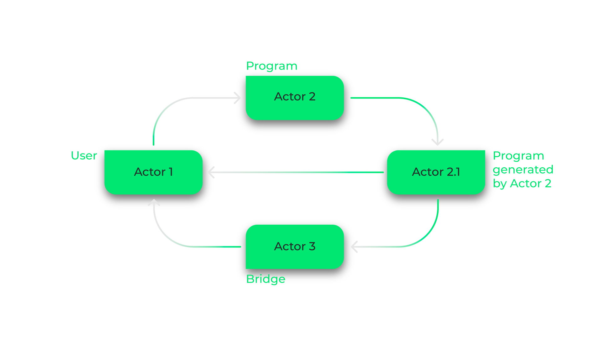
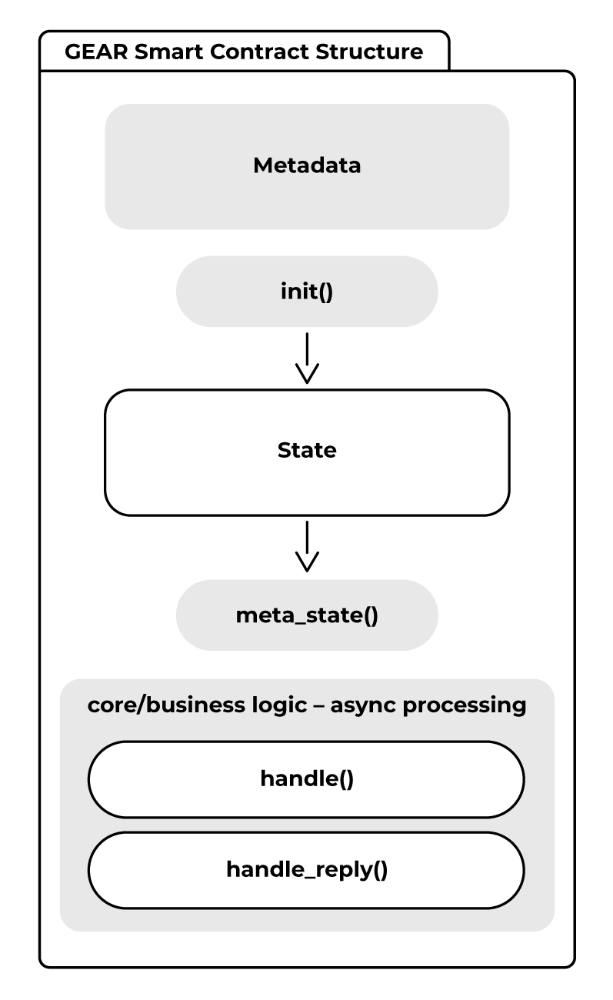
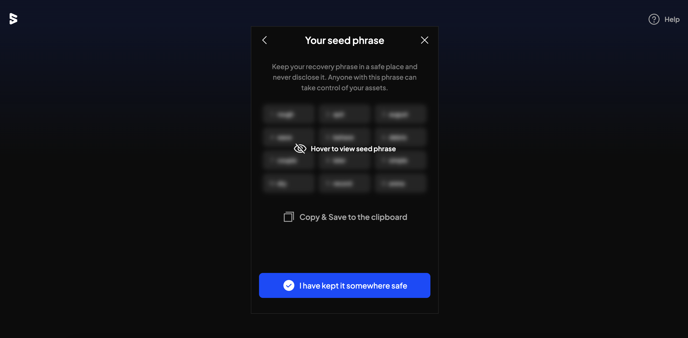
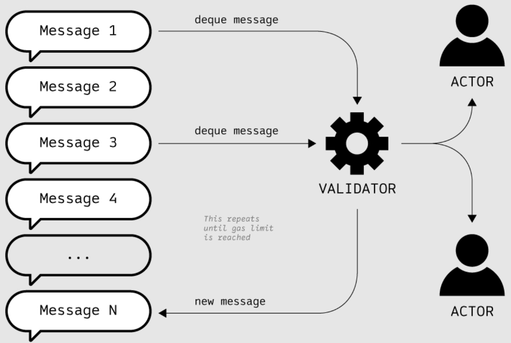
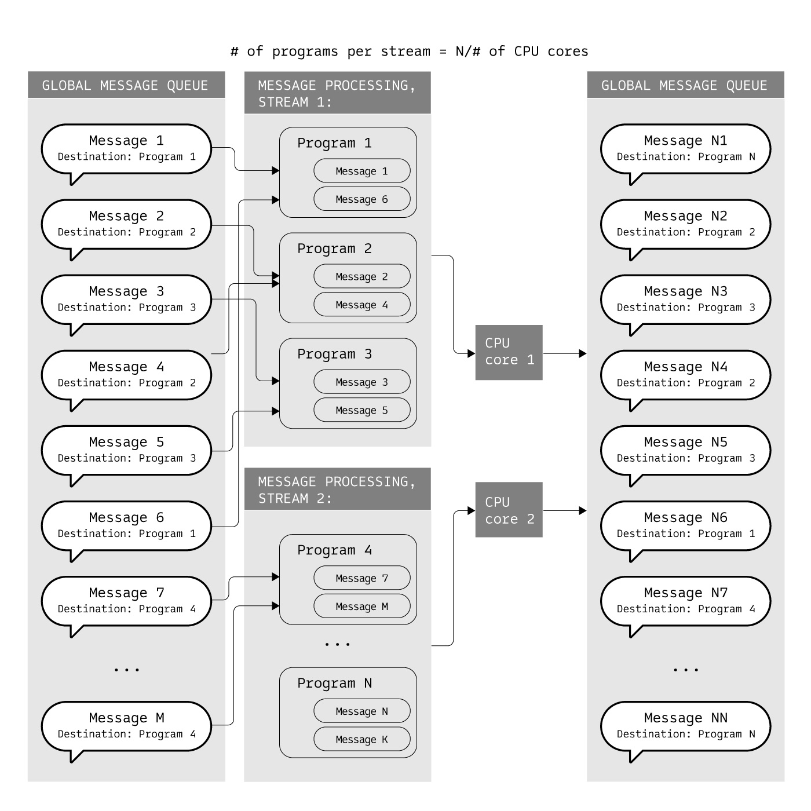

<!DOCTYPE html>
<html lang="en">

<head>
  <meta charset="utf-8" />
  <meta name="viewport" content="width=device-width, initial-scale=1.0, maximum-scale=1.0, user-scalable=no" />

  <title>核心概念</title>
  <link rel="icon" href="./../../assets/favicon.svg" />
  <link rel="shortcut icon" href="./../../assets/favicon.png" />
  <link rel="stylesheet" href="./../../dist/reset.css" />
  <link rel="stylesheet" href="./../../dist/reveal.css" />
  <link rel="stylesheet" href="./../.././assets/styles/PBA-theme.css" id="theme" />
  <link rel="stylesheet" href="./../../css/highlight/shades-of-purple.css" />

  <link rel="stylesheet" href="./../.././assets/styles/custom-classes.css" />

</head>

<body class="site">
  <header class="site-header">
    <!-- This logo is a link only on the watching server, not the production build -->
    <a href="">
      
    </a>
  </header>
  <main class="reveal">
    <article class="slides">
      <section  data-markdown><script type="text/template">

# 核心概念
</script></section><section  data-markdown><script type="text/template">
## Actor Model



Gear Protocol 额外保证了消息的顺序

<aside class="notes"><p>一切皆 Actor</p>
<p>每个 Actor 封装了自己的私有状态和行为</p>
<p>它们无法直接访问其它 Actor 内部状态, 只能通过异步消息进行通信</p>
<p>这意味着发送消息后，Actor 不需要等待这条消息被其他的 Actor 处理，</p>
<p>它可以继续执行其他业务逻辑，直到收到相应的回复</p>
<p>在 Actor 处理收到的消息时，它可以:</p>
<p>回复这条消息，向其它 Actor 发送消息</p>
<p>创建新的 Actor</p>
<p>以及改变其内部状态</p>
<p>使用 Actor Model 可以简化合约间的异步通信，</p>
<p>在传统 Actor Model 的基础上，Gear Protocol 额外保证了异步消息的顺序</p>
<p>让合约能按照消息被发送的顺序对消息进行处理，产生具有确定性的执行结果</p>
</aside></script></section><section  data-markdown><script type="text/template">
## Actor

<br/>

<pba-cols>

<pba-col>


- 用户账户 - User Accounts 
- 一般合约 - Programs
- 内置合约 - Built-in Actors

<br/>

每个 Actor 都有各自的地址

</pba-col>

<pba-col>

- 用户 <=> 用户
- 用户 <=> 合约
- 合约 <=> 合约

<br/>

发送给用户的消息在 Mailbox 中

</pba-col>

</pba-cols>
</script></section><section  data-markdown><script type="text/template">
## Program

<br/>

<pba-cols>

<pba-col>



</pba-col>

<pba-col>

- State
- Metadata
- Entrypoint
  - init - 初始化 State
  - state - 读取 State
  - handle - 处理消息
  - handle_reply - 处理回复

</pba-col>

</pba-cols>

<aside class="notes"><p>Metadata holds information about I/O types to init, meta_state, and handle</p>
<p>State holds variables necessary for business logic</p>
<p>init() function performs one-time upload tasks like initializing the state (Active/Terminated)</p>
<p>meta_state() allows to read the state feelessly (gas-free) via querying</p>
<p>handle() defines primary logic based on messages received from the outside world and updates the state</p>
<p>handle_reply() defines business logic for receiving messages back as a response from other contracts (and allows for async processing)</p>
</aside></script></section><section  data-markdown><script type="text/template">
## Weight / Gas / Currency

<br/>

<pba-flex left>

- 1 Weight = 10^-12 秒计算时间
- 1 Gas = 1 Weight
- 1 VARA = 10^12 Gas

<br/>

单个区块消耗的 Gas 上限为 750 000 000 000 (0.75 VARA)

相当于在标准硬件上 750ms 的执行时间

<br/>

- 合约可预留 Gas 用于在未来执行某些任务
- 用户可使用 Gas Voucher 支付特定合约 Gas 费

</pba-flex>
</script></section><section  data-markdown><script type="text/template">
## Message

<br/>

<pba-cols>

<pba-col>

- 转账
- 合约部署
- 合约调用
- ...

<br/>

一切行为都可以通过消息来表示

</pba-col>

<pba-col>


- id
- source - Sender 地址
- destination - Receiver 地址
- gas_limit - Gas 费上限
- value - 金额 (单位: Gas)
- payload - 消息内容 (SCALE)


</pba-col>

</pba-cols>
</script></section><section  data-markdown><script type="text/template">
## Global Message Queue

<br/>

<pba-cols>

<pba-col>



Enqueue

</pba-col>

<pba-col>



Dispatch

</pba-col>

</pba-cols>
</script></section><section  data-markdown><script type="text/template">
## Parallel Message Processing

<br/>

</script></section>
    </article>
  </main>

  <script src="./../../dist/reveal.js"></script>

  <script src="./../../plugin/markdown/markdown.js"></script>
  <script src="./../../plugin/highlight/highlight.js"></script>
  <script src="./../../plugin/zoom/zoom.js"></script>
  <script src="./../../plugin/notes/notes.js"></script>
  <script src="./../../plugin/math/math.js"></script>

  <script src="./../../assets/plugin/mermaid.js"></script>
  <script src="./../../assets/plugin/mermaid-theme.js"></script>

  <script src="./../../assets/plugin/chart/chart.js"></script>
  <script src="./../../assets/plugin/chart/chart.min.js"></script>

  <script src="./../../assets/plugin/tailwindcss.min.js"></script>

  <script>
    function extend() {
      var target = {};
      for (var i = 0; i < arguments.length; i++) {
        var source = arguments[i];
        for (var key in source) {
          if (source.hasOwnProperty(key)) {
            target[key] = source[key];
          }
        }
      }
      return target;
    }

    // default options to init reveal.js
    var defaultOptions = {
      controls: true,
      progress: true,
      history: true,
      center: true,
      transition: 'default', // none/fade/slide/convex/concave/zoom
      slideNumber: true,
      mermaid: {
        startOnLoad: false,
        logLevel: 3,
        theme: 'base',
        themeVariables: {
          primaryColor: purple,
          primaryTextColor: white,
          primaryBorderColor: pink,
          lineColor: pink,
          secondaryColor: lightPurple,
          tertiaryColor: lightPurple,
        },
      },
      chart: {
        defaults: {
          color: 'lightgray', // color of labels
          scale: {
            beginAtZero: true,
            ticks: { stepSize: 1 },
            grid: { color: "lightgray" }, // color of grid lines
          },
        },
        line: { borderColor: ["#ccc", "#E6007A", "#6D3AEE"], "borderDash": [[5, 10], [0, 0]] },
        bar: { backgroundColor: ["#ccc", "#E6007A", "#6D3AEE"] },
      },
      plugins: [
        RevealMarkdown,
        RevealHighlight,
        RevealZoom,
        RevealNotes,
        RevealMath,
        RevealMermaid,
        RevealChart
      ]
    };

    // options from URL query string
    var queryOptions = Reveal().getQueryHash() || {};

    var options = extend(defaultOptions, {"width":1500,"height":900,"margin":0,"minScale":0.2,"maxScale":2,"transition":"none","controls":false,"progress":true,"center":true,"slideNumber":false,"backgroundTransition":"fade"}, queryOptions);
  </script>


  <script>
    Reveal.initialize(options);
  </script>
</body>

</html>
